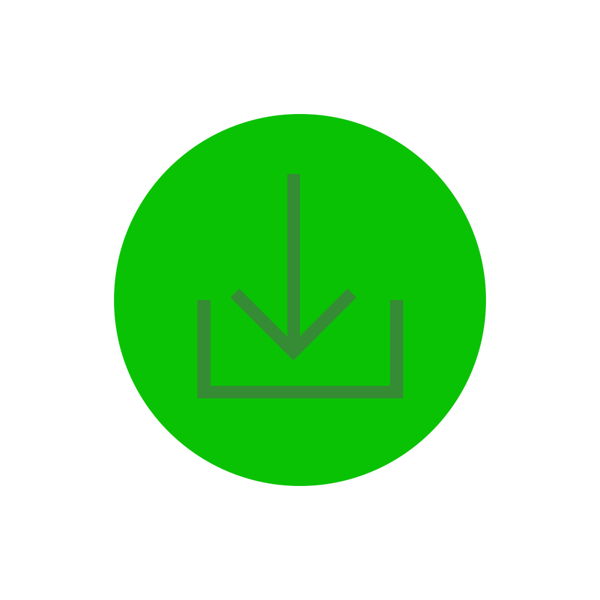

Downloads
Cataclysm has official builds for Windows, Linux, OSX and Android. The Linux and OSX builds are available in both terminal and graphical flavors. Windows and Android builds are graphical only, though there is a “text rendering” mode in the graphical build.
There is a very old and unsupported fork for iOS.
Cuidado el boton anda de verdad